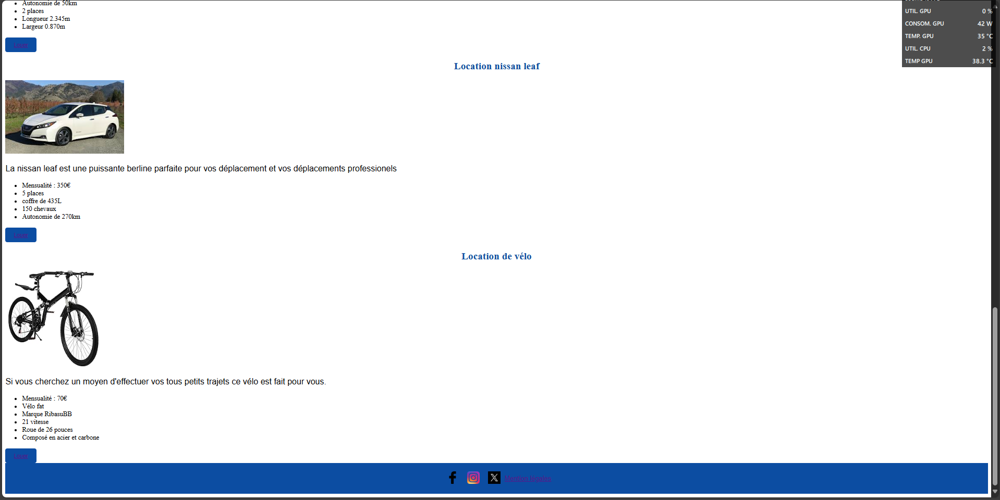
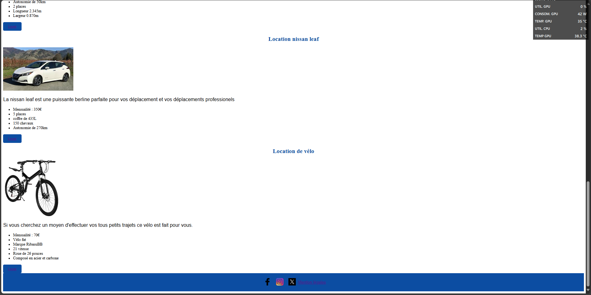

Site Web De Covoiturage CapCom
Description du Projet
Le projet consistait à créer un site web de covoiturage pour les employés de CapCom. L'objectif était de faciliter les trajets domicile-travail entre collègues, de réduire les émissions de CO2 et de promouvoir une mobilité plus durable. Ce projet était purement fictif et réalisé dans le cadre d'un exercice d'entraînement, sans l'implication réelle de CapCom.
Fonctionnalités Principales
- Création de styles CSS réactifs
- Utilisation de Flexbox et Grid pour la mise en page
- Animations et transitions CSS
- Optimisation des performances CSS
Ma Contribution
En tant que développeur CSS, j'étais responsable de la conception et de la mise en œuvre de l'interface utilisateur. J'ai travaillé sur la création de styles réactifs pour assurer une expérience utilisateur optimale sur différents appareils. J'ai également collaboré avec les développeurs backend pour intégrer les fonctionnalités de la base de données en temps réel.
Captures d'écran
 
